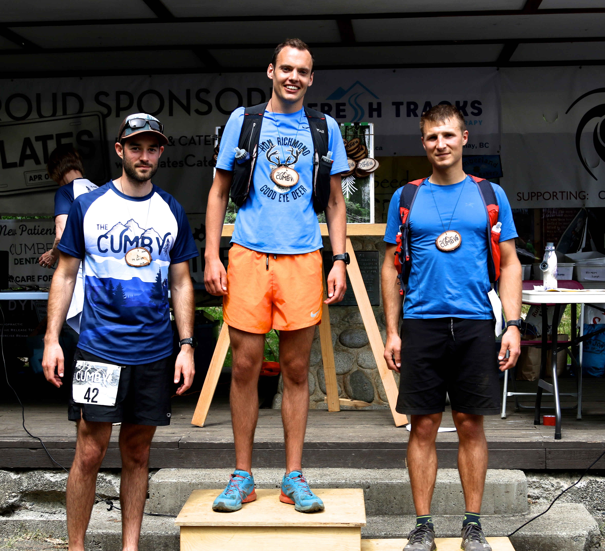

I first discovered the Cumby trail race when Googling races in the lead up to our Canada trip. Most people would think that going for a run on your honeymoon - let alone entering a 25km trail race - was a bit weird. Those people would be correct. However, luckily I have married one of the few people that is okay with it.
The Cumby is a 25km running race through the Cumberland forest on Vancouver Island. It starts in the great little village of Cumberland before heading up into the mountain bike trails, resulting in a fairly lumpy course. The route and elevation map appeared to indicate that it would be a hilly but not too crazy, and as most of the climbing was during the first 6km I expected the vast majority of the race to be manageable and relatively fast. In hind-sight the turn-by-turn directions were probably a better indication of what was in store:
...Up Rapture Cliff to top...Sharp left and over to steep downhill called Kamikazi...
Having run the Beachy Head marathon back in October 2018 (with a total of 1,200m elevation gain), I felt like I wasn’t coming into it completely unprepared, but still knew that I would be a fish out of water. Living and training in London meant that I was definitely a flatlander with the majority of my runs being along on the pan-flat Thames river path or, when I wanted to mix it up, the pan-flat London canal paths. Thankfully we had a week and a half in Canada beforehand to get in a few hilly training runs and get used to the terrain.
The day of the race arrived and the weather was glorious sunshine. We parked up and registered with some very happy, friendly volunteers before making final preparations. After a rendition of the Canadian national anthem (which involved me awkwardly standing amongst Canadians hoping no-one would realise I had absolutely no idea what the words were) we were ready to go. I had done some casual Strava stalking of last year's race and discovered that, although small, there was still some pretty rapid guys who run it. Completely pulling predictions from thin air, I suspected that I could finish somewhere near the front but definitely shouldn’t ever see clear trail.
The gun went off and after a small bit of road we started running up the mountain. Ever the optimist, I quickly decided that although running with the front guys would be crazy, running with some fast looking locals just behind them would be a sensible plan. I figured I would try and hang with these guys for the first few kilometres and drop back if things started getting too hard. It later turned out that one of them was the previous years' winner Derek. So much for a sensible plan...
After a couple of kilometres the chat had subsided and Derek starting creating a gap. I would like to say that I ‘let him go’ but at this point I was becoming aware of how hard I was pushing. As the adrenaline started to wear off and the kilometres ticked by my effort levels were climbing higher and higher and I began to worry that I had massively overdone it. It was around this point that one of guys started walking the steep sections. The other joined him in walking, giving me my cue to cash in on my decision to stick with the experienced locals and power hike as well.
For reasons still unbeknown to me I decided against this logical plan. My hypoxic brain instead came to the conclusion that now was my chance to impress the locals with my sheer speed and I bounded past them with a smug feeling of self-admiration. This rapidly morphed into panic approximately 5 seconds later when they resumed their steady run just behind me. The overtake had definitely put me in the red but I knew that to "keep my dignity" and not be immediately passed I would need to keep pushing. The next 2-3 kms became an excruciatingly painful death-march to keep the lead, with me desperately hoping that the top of the trail would be around the next corner. My mental state had gone through shifts of “Come on, you need to place well in this race” to “Oh god, just finish this race” to “I don’t care about anything and want to die”. I have done a few races over the past year but I can safely say I have never had such a strong urge to stop and lie down as I did during the first 6km of this race.
Respite finally came when a jolly marshall shouted “Well done! Just a cruise down from here!” and I dialled back the effort and attempted to relax as we started descending. I had learned from the Beachy Head marathon that running downhill was not a strength of mine. This lesson was once again hammered home when one of the locals I had just victoriously overtaken on the uphill came bounding past me like I was standing still.
The next 10km or so went past painfully, but mostly uneventfully. Although the brutal uphills had subsided I had developed a stitch and my pace had dropped off from a stupidly optimistic ~4:30/km to an struggling ~5:30/km. I had expected to be passed by lots of people I was amazed that I had only been overtaken by two people, including the initial gazelle-like local. I put two and two together and realised that the majority of other runners may also have paced the hill “sub-optimally” and were feeling the heat. As the stitch started to reside the goal of ‘don’t get overtaken again’ became the main motivator.
The remainder of the course ended up being pretty lumpy and technical, spending most of the time on single track mountain bike trails named things like ‘Kamikaze’, ‘Swamp Monster’ and ‘Rapture’. I started getting my effort levels down and felt more like I could actually finish this thing, provided that I didn’t succumb to heat stroke. I went into the trip with an expectation of rain, cold winds and possibly even snow but we had received blistering heat for the majority of it. Overall, this was an amazing outcome... apart from when I was struggling up a satanically named mountain bike trail in Cumberland.
Despite the heat, my new less-insane pacing strategy was paying off and I was feeling better and better. With about 8km to go I caught a glimpse of a runner ahead of me! I would occasionally see him on straight sections of the trail before he disappeared around a corner. After another kilometre I noticed he was right behind another runner which was all the motivation I needed. I spent the next couple of kms slowly catching them, mainly making all my progress on the uphills when they were walking (I was reapplying my stupid strategy from the beginning now with great success). I overtook with about 4km to go and somehow managed to hold them off, coming in 2:10:52 which was good enough for 8th overall.
The lady at the finish line told me that I would get a medal if I made the podium, which I laughed off. Little did I know that there were age group podiums, and, due to the fact that the vast majority of fast runners were a couple of years older than me, I had bagged first in my age group!
After attempting (unsuccessfully) to walk off the pain in my legs, I returned to the finish line to cheer on Rachel as she finished her 13km “half-cumby” race. Despite her race consisting of the most brutal parts of the full Cumby she had run a great race and thankfully really enjoyed it, having befriended some local fellow competitors along the course. We then spent the next hour or so making the most of the free food and drink (read: hoovering up as many cookies as possible) as well as soaking up as much of the sun as possible. The prizes were announced a little while after which gave me a chance to stand at the top of the podium and get a lovely handmade wooden medal. The most impressive win of the day definitely went to the obscenely rapid 12 year old girl who nearly won the overall 5km race, coming second by less than a minute to a 30 year old guy.
Overall, despite being in agony for most of the 2ish hour run, it was an amazing race and one that I would highly recommend. The organisation was brilliant, the volunteers were really helpful and the event had a happy, friendly atmosphere to it. If we ever get the chance then Me and Rachel will definitely be back!